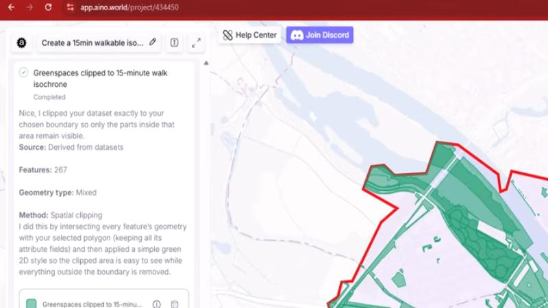
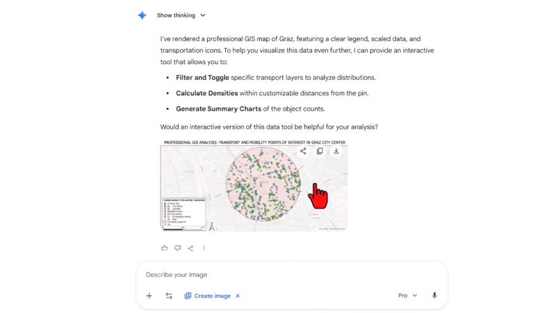
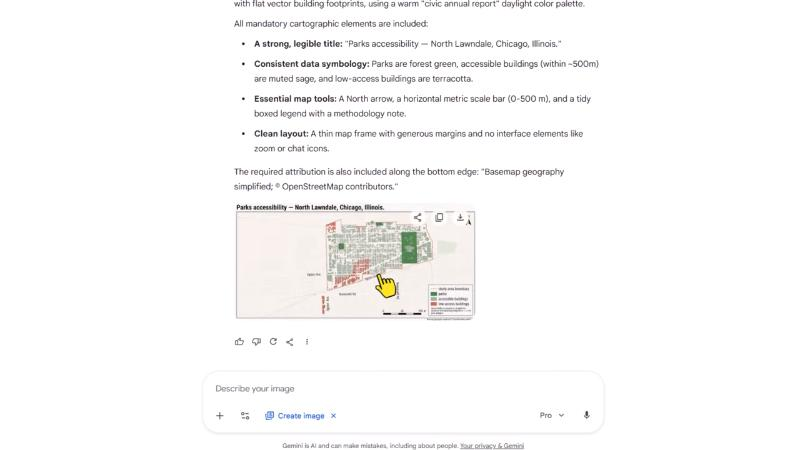
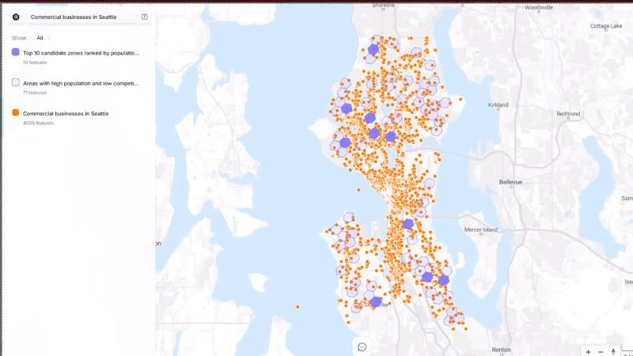

Image models produce beautiful maps that are quietly wrong. They were not built for analysis, and a map that invents a catchment is worse than no map.
GIS tools produce correct maps that look like GIS output. Fine for you, awkward in front of a client.
The answer is not to pick one. Run the analysis in a GIS tool, export a proper base map, then use the image model only to restyle it. You keep the geometry and the numbers; you get the drawing.
1. Do the analysis where the data is
This used Aino, an AI site-analysis app that works with GIS and urban data through chat. Any GIS will do — the requirement is real data and a real projection, not the tool.
The worked example: a site in Deventer, Netherlands, with a 15-minute walking isochrone, then green space within that zone.

Two things make this worth doing properly rather than guessing:
- You can inspect the dataset — metadata and table view — and see what the features actually are and where they came from.
- Operations like clipping to a boundary and the calculations behind them are the things that are genuinely hard to do by eye, and exactly where the AI is earning its place.
Basic cartographic editing — labels, groups, outlines, hatch colours — can be done by hand here too. For simple maps, do it manually. You get more control.
2. Export with scale bar and page size set
This step decides whether the result is a map or a picture of one.
In the export tab, set page size, scale, and scale bar before you export. Turn them on. If the scale bar is in the image, the rendered output stays measurable; if it is not, you have produced an illustration.
Some tools will not export the key. If yours does not, screenshot the legend separately — you will paste it in alongside and the image model will place it.
3. Restyle, don't regenerate
Drop the exported PNG into Nano Banana Pro — Gemini Pro, AI Studio or the API, the process is the same — and describe what the map is before asking for changes.
The first pass is modest and that is the point: a better scale bar, cleaner hatching, a north arrow, a legible key.

From there you can push much further — a Photoshop-rendered plan with textures, an illustrative style, even maps composed into physical spaces for a narrative. The content stays accurate because the content came from the GIS.
4. Points of interest, and fixing the icons
The same pattern for mobility: prompt in Aino for transportation and mobility points within a 1 km radius, then categorised and coloured. Point-radius analysis with stated parameters is what these tools are good at, and the legend comes back grouped logically with counts per category.
Export at A3, screenshot the key, paste both into the image model.

It merges legend and map sensibly, redraws the icons, and keeps the original numbering. If the result is cluttered, the fix is upstream — reduce the radius and change the map scale — not more prompting.
5. The prompt structure that actually preserves data
For anything you will put in front of a client, use a four-part prompt rather than a sentence. The structure, in order:
- What to preserve. Geometry, boundaries, symbology, data values, annotations.
- The visual style you want. Be specific — "clean municipal planning policy brief aesthetic with a soft warm grey base map" is a usable instruction.
- The data to include. Name the layers: the parks, the buildings, the classes.
- The cartographic furniture and where it goes. Scale bar, legend, north arrow, title, attribution, and their positions.

Going through each element explicitly is what gives you control. Change only paragraph two and the same map becomes a dark theme, or a vibrant one, or a muted policy-document one — with the data untouched.
6. Agentic analysis, then render
For more complex work the agent can plan the analysis itself. Ask for mobility analysis across all main transport types and it works out which analyses are needed and runs them. The facts and data points go straight into reports.

That last one is the warning. The restyled version of this analysis looked superb — luminous contours, blue-hour cartography, dynamic icons — and got the numbering of the top ten locations wrong.
The rule
Everything factual comes from the GIS. The image model changes how it looks and nothing else. Then check the output against the source before it leaves your desk, because the failure mode is a map that is beautiful, confident and wrong — and nobody downstream will catch it.
Pick a theme, run the analysis, export with the scale bar on, and use the four-part prompt. That is the whole method.